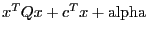
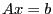
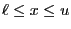
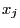
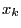

Next: Attributes Up: Gurobi Optimizer Reference Manual Previous: Setting up the Gurobi
The Gurobi R interface allows you to build an optimization model, pass the model to Gurobi, and obtain the optimization result, all from within the R environment. For those of you who are not familiar with R, it is a free language for statistical computing. Please visit the R Project web site for more information.
The Gurobi R interface can be used to solve optimization problems of
the following form:
| minimize |  | |
| subject to |  | (linear constraints) |
|  | (bound constraints) | |
| some  integral | (integrality constraints) | |
| some  lie within second order cones | (cone constraints) |
Many of the model components listed here are optional. For example, integrality constraints or second order cone constraints may be omitted. We'll discuss the details of how models are represented shortly.
A quick note for new users: the convention in math programming is that variables are non-negative unless specified otherwise. You'll need to explicitly set lower bounds if you want variables to be able to take negative values.
The Gurobi R API
The Gurobi R interface is quite concise. It consists of a single R function that takes a pair of arguments:
| gurobi | ( model, params=NULL ) |
The two arguments are R list variables, each consisting of
multiple named components. The first argument contains the
optimization model to be solved. The second contains an optional list
of Gurobi parameters to be modified during the solution process. The
return value of this function is a list, also consisting of multiple
named components. It contains the result of performing the
optimization on the specified model. We'll now discuss the details of
each of these lists.
The optimization model
As we've mentioned, the model argument to the gurobi()
function is a list variable, containing multiple
named components that represent the various parts
of the optimization
model. Several of these components are optional.
Note that you refer to a
named component of an R list variable by appending a dollar sign
followed by the component name to the list variable name. For
example, model$A refers to component A of list
variable model.
The following is an enumeration of all of the named components of the
model argument that Gurobi will take into account when
optimizing the model:
sparseMatrix
from the Matrix package, or simple_triplet_matrix
from the slam package.
c vector in the
problem statement above). You must specify one value for each column
of A.
'=', '<=', or '>='. You must specify one value for each row of
A.
A.
A. When absent, each
variable has a lower bound of 0.
A. When absent, the
variables have infinite upper bounds.
'C'
(continuous), 'B' (binary), 'I' (integer), 'S' (semi-continuous), or
'N' (semi-integer). Binary variables must be either 0 or 1.
Integer variables can take any integer value between the specified
lower and upper bounds. Semi-continuous variables can take any
value between the specified lower and upper bounds, or a value of
zero. Semi-integer variables can take any integer value between the
specified lower and upper bounds, or a value of zero. When present,
you must specify one value for each column of A. When
absent, each variable is treated as being continuous.
NA, which
instructs the MIP solver to try to fill in a value for that
variable.
A.
vbasis description for details. When present,
you must specify one value for each row of A.
Q
must be a square matrix whose row and column counts are equal to the
number of columns in A.
gurobi() function will return an error.
Below is an example that demonstrates the construction of a simple optimization model:
model <- list()
model$A <- matrix(c(1,1,0,0,1,1), nrow=2, byrow=T)
model$obj <- c(1,1,2)
model$modelsense <- "max"
model$rhs <- c(1,1)
model$sense <- c('<=', '<=')
You can also build A as a sparse matrix,
using either sparseMatrix or simple_triplet_matrix:
model$A <- spMatrix(2, 3, c(1, 1, 2, 2), c(1, 2, 2, 3), c(1, 1, 1, 1)) model$A <- simple_triplet_matrix(c(1, 1, 2, 2), c(1, 2, 2, 3), c(1, 1, 1, 1))
Note that the Gurobi interface allows you to specify a scalar value
for any of the array-valued components. The specified value will be
expanded to an array of the appropriate size, with each component of
the array equal to the scalar (e.g., model$rhs <- 1 would be
equivalent to model$rhs <- c(1,1) in the example).
The parameter list
The optional params argument to the gurobi() function
is also a list of named components. For each component, the name
should be the name of a Gurobi parameter, and the associated value
should be the desired value of that parameter. Gurobi parameters
allow users to modify the default behavior of the Gurobi optimization
algorithms. You can find a complete list of the available Gurobi
parameters here.
To create a list that would set the Gurobi
Method parameter to 2 and the
ResultFile parameter
parameter to model.mps,
you would do the following:
params <- list(Method=2, ResultFile='model.mps')
We should say a bit more about the
ResultFile parameter. If this parameter is set, the optimization
model that is eventually passed to Gurobi will also be output to the
specified file. The filename suffix should be one of .mps,
.lp, .rew, or .rlp,
to indicate the desired file format (see the
file formats
section for details on Gurobi file formats).
The optimization result
The gurobi() function returns a list, with the various results
of the optimization stored in its named components. The specific
results that are available depend on the type of model that was
solved, and the status of the optimization.
The following is a list of components that might be available
in the result list. We'll discuss the circumstances under which
each will be available after presenting the list.
"OPTIMAL", which indicates that an
optimal solution to the model was found. Other status are possible,
for example if the model has no feasible solution or if you set a
Gurobi parameter that leads to early solver termination. See the
Status Code section for further
information on the Gurobi status codes.
A.
A.
A.
A.
vbasis and cbasis arrays into
the corresponding components for the next model. This array
contains one entry for each column of A.
A.
status component will be present in all cases. It
indicates whether Gurobi was able to find a proven optimal solution to
the model. In cases where a solution to the model was found, optimal
or otherwise, the objval, x, and slack
components will be present. For linear and quadratic programs, if a
solution is available, then the pi and rc components
will also be present. Finally, if the final solution is a
basic solution (computed by simplex), then vbasis and
cbasis will be present.
The following is an example of how the results of the gurobi()
call might be extracted and output:
result <- gurobi(model, params) print(result$objval) print(result$x)
Installing the R package
To use our R interface, you'll need to install the Gurobi package in R. The R command for doing this is:
install.packages('<R-package-file>', repos=NULL)
The Gurobi R package file can be found in the <installdir>/R
directory of your Gurobi installation
(the default <installdir> for Gurobi 6.0.0 is
/opt/gurobi600/linux64 for Linux,
c:\gurobi600 for Windows,
and /Library/gurobi600 for Mac).
You should browse the <installdir>/R directory to find
the exact name of the file for your platform
(the Linux package is in file
gurobi_6.0-0_R_x86_64-pc-linux-gnu.tar.gz,
the Windows package is in file
gurobi_6.0-0.zip, and the Mac package is in file
gurobi_6.0-0.tgz).
You will need to be careful to make sure that the R binary and the Gurobi package you install both use the same instruction set. For example, if you are using the 64-bit version of R, you'll need to install the 64-bit version of Gurobi, and the 64-bit Gurobi R package. This is particularly important on Windows systems, where the error messages that result from instruction set mismatches can be quite cryptic.
To run one of the R examples provided with the Gurobi distribution,
you can use the source command in R. For example, if you
are running R from the Gurobi R examples directory, you can say:
> source('mip.R')
If the Gurobi package was successfully installed, you should see the following output:
[1] "Solution:" [1] 3 [1] 1 0 1